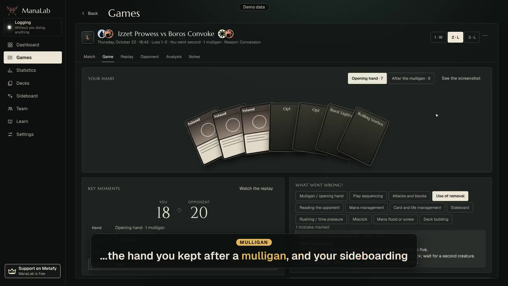

Guia do ManaLab
O que cada parte do app faz e como usar, no Arena e no Magic Online. Foco nas funções principais e no coach IA.
O que é o ManaLab
O ManaLab guarda no seu PC cada partida que você joga no MTG Arena e no Magic Online (MTGO) e mostra o que funciona: suas taxas de vitória por deck, por adversário e por matchup, seus mulligans, seus erros e suas trocas de sideboard.
O app é gratuito. A única parte paga é a análise de derrotas com IA: US$ 6 por mês, com teste grátis.
Primeiros passos
- Baixe a versão portátil (ZIP), extraia e abra o ManaLab. Não precisa de instalação. Para atualizar depois, extraia a versão nova por cima da pasta antiga: seus dados são mantidos.
- No Arena, vá em Opções › Conta e ative «Registros detalhados (suporte a plug-ins)» (Detailed Logs (Plugin Support)). Depois reinicie o Arena. Sem isso, o ManaLab não consegue ler suas partidas do Arena. O Magic Online não precisa de nenhuma configuração.
- Enquanto você não tiver nenhuma partida, o Painel mostra «Prepare a mesa», com os passos que faltam e o que cada partida vai salvar. Com «Ocultar» você o tira para sempre. Você pode ver o guia de início de novo em Configurações › Dados e sobre o ManaLab, com «Ver o guia de início».
- O ManaLab começa a registrar sozinho ao abrir (você pode mudar isso em Configurações › Jogos). A partir daí, cada partida, do Arena e do Magic Online, fica salva automaticamente. O quadro abaixo do nome ManaLab na barra lateral mostra «Registrando».
- Jogue em janela ou em janela sem bordas: o overlay não aparece em tela cheia exclusiva.
Requisitos: Windows 10 ou 11 e Arena, Magic Online ou ambos.
Magic Online
O ManaLab registra o MTGO como o Arena, e não há nada para configurar: nem «Registros detalhados (suporte a plug-ins)» nem ajustes. Com o ManaLab registrando, abra o Magic Online e o ManaLab o detecta sozinho. O estado do Magic Online na linha de cima do Painel mostra «Não detectado» até o ManaLab encontrar o jogo e, a partir daí, acompanha suas partidas como o do Arena.
Ele registra todos os formatos: suas mãos iniciais e mulligans, se você jogou primeiro ou segundo, seu deck, as cartas que o adversário mostra, a vida, a repetição e a cronologia. Seu deck recebe o nome que você salvou no Magic Online se a lista combinar exatamente e, se não, o nome pelas cores; um nome que você digitar em Decks nunca é substituído.
- Overlay: as cartas que restam no seu deck e as que o adversário mostrou, sobre o Magic Online (veja Overlay).
- Momentos de destaque: «Capturar momento» também funciona no Magic Online (veja Capturas e momentos de destaque). O ManaLab não faz capturas sozinho.
- Importar: em Partidas, clique em «⋯» › «Importar partidas», escolha «Log do Arena ou do Magic Online» e selecione um
mtgo.logpara trazer partidas que você jogou com o ManaLab fechado. Elas contam como suas, e as que você já tem não são duplicadas. - Local do registro: Configurações › Jogos, no grupo Magic Online, «Arquivo mtgo.log». Deixe em «Padrão», a menos que o Magic Online guarde seu registro em outra pasta.
O que muda no MTGO
- As fases e as cartas viradas são deduzidas. O Magic Online não as envia, então o ManaLab as deduz apenas do log. Na repetição, tudo o que é deduzido leva ≈, porque pode não ser exato.
- Fichas e emblemas (por exemplo Tesouro ou Sangue) aparecem somente na repetição. Não constam nas cartas do adversário, nas suas listas de deck nem no overlay.
- O overlay pode mostrar menos do que no Arena quando o log não traz o estado da mesa.
- O sideboard: o Magic Online não diz com que deck você joga as partidas 2 e 3 até elas começarem, então o ManaLab pergunta a você (próxima seção).
Mais no site: Tracker para Magic Online: o que ele guarda e como funciona (em inglês).
Sideboard no Magic Online
Depois de uma partida, o log do Magic Online repete sua lista original, mesmo que você tenha feito sideboard. A lista real só chega quando a partida seguinte começa. Por isso, quando o sideboard começa, um painel pequeno «Sideboard · Partida N» aparece sobre o Magic Online. Ele nunca tira o foco do jogo e se fecha sozinho quando a partida seguinte começa. Tem três botões:
- «Usar esta mudança» repete o que você fez da última vez contra o mesmo deck adversário. Só aparece quando existe uma última vez.
- «Sem mudanças» mantém sua lista base.
- «Editar» abre o ManaLab com seu deck principal e seu sideboard lado a lado: − tira uma cópia, + coloca uma e você pode procurar uma carta. O contador «Entram · Saem» avisa se os números não batem, mas você ainda pode confirmar.
Se você ignorar o painel, a lista fica sem confirmar. O overlay então mostra «Lista não confirmada», probabilidades aproximadas que começam com ≈ e «≥ N cartas fora (não identificadas)»: o ManaLab sabe quantas cartas saíram do seu deck, não quais. Corrija com «Corrigir sideboard» na barra lateral, durante a partida ou entre partidas. Qualquer que seja sua escolha, a lista real do log sempre vale assim que o Magic Online a envia.
Você também pode corrigir depois da partida: em Partidas, abra a partida, vá à aba Partida e clique em «Corrigir sideboard». Isso é oferecido nas suas próprias partidas do Magic Online, a partir da 2, cuja lista não foi confirmada. As partidas seguintes do match que também não estavam confirmadas são recalculadas a partir da sua correção, e a partida passa a contar como confirmada nas estatísticas, no guia de sideboard e na análise com IA.
Uma partida nunca confirmada mostra «Sideboard não confirmado» na sua aba Partida. O guia de sideboard não conta as mudanças dela, e a análise com IA é avisada de que elas são desconhecidas, não de que não houve nenhuma.
A partir da partida 2, a aba Partida mostra o que você colocou e tirou do sideboard em relação à sua lista original (a partida 1), em «Em relação à lista original». Se você voltou à lista original, nada é mostrado. Para desligar o painel, use «Perguntar sobre as mudanças de sideboard (Magic Online)» em Configurações › Overlay; «Corrigir sideboard» continua disponível.
Painel: sua mesa de hoje
O Painel se chama «Sua mesa de hoje» e mostra se o ManaLab está registrando corretamente. Abaixo do título, uma linha mostra «Registrando» (ou «Em pausa») e o estado de cada jogo: Arena e Magic Online mostram cada um «Escutando», «Em partida», «Não detectado» ou «Parado». O botão no canto superior direito é «Pausar o registro»; com o registro em pausa, uma faixa avisa que as partidas que você jogar agora não serão salvas, e «Retomar» o liga de novo. Abaixo você vê:
- Sessão de hoje: seu placar de hoje em matches e em partidas, uma coluna por match e, à direita, seus últimos 7 dias (a taxa de vitórias em comparação com os 7 dias anteriores), a sequência atual, o tempo de jogo e seus últimos 10 matches. «Ver o resumo da sessão» abre o resumo completo.
- Match em andamento: enquanto você joga, seu deck e o número da partida; quando o match termina, ele vira «Último match», com o resultado, os dois decks e os botões «Ver a repetição», «Marcar o que deu errado» e, depois de uma derrota, «Analisar com IA».
- Últimos matches: seus matches mais recentes por dia (clique em um para ver suas partidas); «Ver todos» abre Partidas.
- Para revisar: suas derrotas recentes sem erros marcados nem notas, cada uma com um botão «Revisar».
- O que mais se repete: os erros que você mais marca, em 30 dias; «30 dias · ver tudo» os abre em Estatísticas.
- Atividade: a última coisa que o ManaLab fez, com «Ver registro» para o registro completo.
Enquanto você não tiver nenhuma partida, em vez desses cartões aparece «Prepare a mesa», com os passos para deixar tudo pronto. Se houver uma versão nova, aparece um aviso no topo. A barra lateral também tem «Capturar momento» durante uma partida.

Partidas: seu histórico
Aqui está todo o seu histórico, por dia e com o oponente em destaque. No canto superior direito, uma busca encontra um oponente, um deck ou um evento, e «Todos», «Vitórias» e «Derrotas» filtram por resultado; abaixo do título ficam o filtro de Deck e, quando você tem partidas em mais de um formato, o de Formato de jogo. Cada linha é um match, com seu resultado, o deck do oponente, o seu, suas partidas e o placar. Clique em um match para ver seu duelo à direita, com «Abrir a partida» e «Ver a repetição», e para abrir suas partidas, que mostram se você jogou primeiro ou segundo.
O botão «⋯» («Mais opções de Partidas») tem «Preparar sessão» e «Importar partidas». Cada partida mostra seu formato; se o ManaLab não conseguiu lê-lo, ou você quer mudá-lo, use «Definir o formato…» no menu «⋯» da partida.
Ao abrir uma partida, você vê estas abas («Voltar» leva de volta à lista):
- Match: o resumo do match e de suas partidas.
- Partida: mão inicial, se você jogou primeiro ou segundo, mulligans, o que entrou e saiu do sideboard e suas capturas.
- Repetição: a partida passo a passo, turno a turno, com uma visão de «Resumo». No Magic Online, os passos deduzidos levam ≈ e as fichas só aparecem aqui.
- Oponente: as cartas do adversário que você viu e o arquétipo detectado.
- Análise: a explicação da IA (assinantes e teste grátis).
- Notas: seus erros e suas notas.


Vídeo na web: https://manalab.es/guia/guia_manalab_pt.html#video-replay

Vídeo na web: https://manalab.es/guia/guia_manalab_pt.html#video-opening-hand-mulligans

Vídeo na web: https://manalab.es/guia/guia_manalab_pt.html#video-opponent
Importar partidas
Em Partidas, «⋯» › «Importar partidas» traz partidas de dois lugares: um arquivo .manalab que alguém te envia (criado por «Exportar partida» no menu «⋯» de cada partida) ou um log do Arena ou do Magic Online: um Player.log do Arena ou um mtgo.log do Magic Online, com partidas que você jogou com o ManaLab fechado ou em outro PC.
Você escolhe quais partidas importar e as que você já tem ficam marcadas, então nada é duplicado. As partidas importadas têm repetição, mãos, mulligans, deck, notas e etiquetas do coach, mas não têm capturas nem análise com IA.
Se você joga com o ManaLab fechado, muitas vezes não precisa fazer isso à mão: ao começar a registrar, o ManaLab olha o registro do Arena e, se encontrar partidas que você não tem, uma faixa dourada do Painel as oferece com «Recuperar» (ou «Recuperar as N»), «Ver quais» e «Agora não». Essas partidas não têm capturas, como qualquer partida importada de um registro.
As partidas de outro jogador levam a marca dele e nunca contam nas suas estatísticas, tendências, relatórios nem na equipe. As que você importa do seu próprio log contam como suas.

Vídeo na web: https://manalab.es/guia/guia_manalab_pt.html#video-import-games
Capturas e momentos de destaque
O ManaLab não faz capturas sozinho: a mão inicial, os mulligans e o resultado já ficam salvos nos dados de cada partida. O que você pode fazer é salvar uma captura de qualquer momento que quiser, no Arena e no Magic Online. É um momento de destaque.
- Pressione F8 (você pode mudar a tecla em Configurações › Jogos, em «Capturas e momentos de destaque», com «Atalho de teclado» e «Tecla»).
- Ou clique no botão «Capturar momento» que aparece sobre o jogo (você pode tirá-lo com «Mostrar o botão sobre o jogo durante a partida»).
- Ou clique em «Capturar momento» na barra lateral do ManaLab.
Os botões só aparecem enquanto há uma partida em andamento. Se a linha de status do Painel disser «Janela não detectada, sem capturas», o ManaLab não encontra a janela do jogo e não consegue capturar: abra o jogo em janela ou em janela sem bordas.
Depois, na aba Partida, abra a captura e escreva uma nota sobre aquele momento.

Vídeo na web: https://manalab.es/guia/guia_manalab_pt.html#video-capture-moment
Notas e erros
Na aba Notas de cada partida você marca os erros que cometeu (com etiquetas) e escreve o que quiser lembrar. Esses erros alimentam o relatório que você pode enviar ao seu coach e as estatísticas de erros repetidos.
Decks
Cada deck que você jogou aparece em sua própria caixa, com os símbolos de mana de suas cores, suas partidas e sua taxa de vitórias. Passe o mouse sobre uma caixa para abri-la e clique em uma para escolher aquele deck e ver seus detalhes. Daqui você pode:
- Renomear um deck («Nome do deck», com «Salvar» ou «Cancelar») ou voltar ao nome que o Arena usa com «Usar nome do Arena». No Magic Online, o deck recebe o nome com que você o salvou se a lista coincidir exatamente; senão, o ManaLab o nomeia pelas cores.
- Mudar o visual da caixa em «Acabamento da caixa»: «Lisa», «Gravada» ou «Brilhante».
- Ver a taxa de vitórias, o «Melhor matchup» e o «Pior matchup» e a «Curva de mana · mágicas por custo» da lista escolhida.
- Escolher uma variante quando um deck tem mais de uma lista («Variante») e ver sua lista e seu sideboard.
- Conferir suas partidas e sua taxa de vitórias com o deck. Decks conta matches, não partidas soltas, e matches não terminados não contam.
Para rever suas partidas com os decks mais recentes do meta, vá em Configurações › Idioma e aparência, em «Decks do meta», e clique em «Reclassificar partidas».
Estatísticas: suas taxas de vitória
A tela «Como você está indo» tem no alto um seletor de período, «7 dias», «30 dias», «90 dias», «Tudo» ou «Desde…» (você escolhe uma data de início), e dois filtros, Formato de jogo (só aparece quando você tem partidas em mais de um formato) e Deck. Cada partida guarda seu formato real, então você pode olhar um formato de cada vez. O período escolhido é salvo. Você vê:
- Sua taxa de vitórias em matches e em partidas, cada uma comparada com o período anterior de mesma duração, além dos seus últimos 10 matches e da sua sequência atual. «Ver sua carta do mês» abre a sua carta do mês.
- «Contra cada cor»: uma roda com sua taxa de vitórias contra os oponentes que jogam cada cor.
- «Contra cada deck»: a tabela de matchups, que mostra contra quais decks você ganha e contra quais perde, com os resultados da partida 1 e depois do sideboard. Um asterisco (*) indica menos de 10 partidas.
- «Últimos dias»: um gráfico das suas vitórias e derrotas por dia.
- «Detalhamento»: por mulligans, primeiro / segundo, deck e oponente, contado em partidas ou em matches.
- «O que mais se repete»: os erros que você marcou, em 30 dias, 90 dias ou em todo o histórico, e «Erros marcados».
O deck do adversário é nomeado comparando suas cartas com os decks do meta mais jogados do formato da partida, atualizados a cada 3 dias (Configurações › Idioma e aparência). Se nada combinar com clareza, ele é nomeado pelas cores.
O menu «⋯» tem «Relatório HTML» e «Exportar para o coach».


Vídeo na web: https://manalab.es/guia/guia_manalab_pt.html#video-statistics
Sideboard: seu plano por matchup
Escolha seu deck e seu adversário. O ManaLab mostra seus resultados naquele matchup («Partida 1», «Com sideboard», «Total», «Primeiro» e «Segundo») e sugere o que tirar e o que colocar, cada coisa com seu nível de confiança, com base nas suas próprias partidas.
Você monta seu plano tocando nas cartas: em «Do sideboard · toque nas que entram» escolhe as que entram e em «Do deck principal · toque nas que saem» as que saem. Ele é salvo sozinho. Em «Notas para este matchup» você anota o que quiser lembrar e, em «Escrever o plano à mão», pode digitar o plano em «Coloco» e «Tiro». Seu plano e suas notas aparecem no relatório para o coach. «Voltar ao que você sempre faz» aplica as mudanças que você repete nesse matchup e «Desfazer» traz de volta seu plano anterior.
Mais abaixo você vê «Mudanças que você fez neste matchup», «Suas cartas neste matchup» (como cada uma das suas cartas se sai) e «Cartas do oponente que você mais viu». No Magic Online, as partidas cujo sideboard nunca foi confirmado não contam.
Com assinatura, «Pedir plano à IA» sugere um plano de sideboard baseado nas suas partidas naquele matchup, em «Plano proposto pela IA». Ele não substitui o seu.

Vídeo na web: https://manalab.es/guia/guia_manalab_pt.html#video-sideboard-guide
Overlay: seu deck sobre o jogo
O overlay é formado por dois painéis sobre a janela do jogo, no Arena e no Magic Online. O «Meu painel» mostra as cartas que restam no seu grimório, com as cópias que restam sobre as do deck (por padrão em número, como 2/4), a probabilidade de comprar cada uma e uma linha de «Terrenos». O painel do adversário mostra as cartas que ele jogou ou revelou, quantas cópias você viu e, quando o ManaLab reconhece, o arquétipo dele. Ele só mostra informação pública ou o que dá para deduzir do que foi jogado.
Aparece quando o jogo é a janela ativa, em janela ou em janela sem bordas (não em tela cheia exclusiva). Se a linha de status do Painel disser «Janela não detectada, sem capturas», o ManaLab não encontra a janela do jogo: abra-o em janela ou em janela sem bordas. Em Configurações › Overlay você pode definir:
- «Mostrar o overlay» (ativado por padrão) e «Testar sobre o Arena», que o mostra por 10 segundos.
- O «Tamanho do painel» (completo, intermediário ou mínimo), as «Cores» (com uma opção para daltônicos, com as letras W U B R G) e o alto contraste.
- «Probabilidade exibida»: a da próxima compra ou a das próximas 2 ou 3.
- «Opacidade do fundo», «Tamanho» e «Distância do topo». Você também pode mover cada painel arrastando sua barra de cima, sobre o jogo; «Restaurar o overlay padrão» o devolve ao lugar.
- «Quando aparece»: «Sempre visível» ou «Só quando o mouse passa por uma zona».
- «O que mostrar», com um interruptor para cada elemento de cada painel. Em «Cada carta» no Meu painel, «Cópias» escolhe entre «Número (2/4)» (o padrão: cópias que restam e cópias do deck) e «Losangos» (um losango cheio para cada cópia que resta).
Marca do ManaLab: um pequeno «ManaLab» num canto do Meu painel, para que quem assiste à sua transmissão saiba o que você usa. Você a desliga em Configurações › Overlay › O que mostrar › Meu painel › «Marca do ManaLab».
Lista de terrenos: passe o mouse sobre a linha «Terrenos» do «Meu painel» e uma lista se abre com cada terreno que resta, suas cópias sobre o total e a probabilidade de comprá-lo em seguida. Funciona igual no Arena e no Magic Online. Você ativa em Configurações › Overlay › O que mostrar › Meu painel: Lista de terrenos ao passar o mouse por “Terrenos” (ativada por padrão; precisa da linha de terrenos).
Entre as partidas de um match melhor de três, se você salvou um plano para aquele adversário em Sideboard, um painel no centro do jogo o lembra («Entram», «Saem» e sua nota) e some sozinho quando a partida seguinte começa.
No Magic Online, quando o log traz linhas da mesa, o ManaLab deduz sua mão e seu grimório e mostra as probabilidades. Quando não traz nenhuma, o overlay mostra só a lista do deck, com as cópias restantes e totais: sem mão, sem número de cartas no grimório e sem probabilidade de compra. Nunca mostra números inventados. Depois de um sideboard, pode mostrar «Lista não confirmada», probabilidades com ≈ e «≥ N cartas fora (não identificadas)» (veja Sideboard no Magic Online).

Vídeo na web: https://manalab.es/guia/guia_manalab_pt.html#video-in-game-overlay
Coach IA: análise de derrotas
O coach IA explica o que deu errado em uma derrota e o que tentar da próxima vez. É a única parte paga do ManaLab: US$ 6 por mês. Antes você pode testar de graça. A assinatura é o plano «ManaLab AI Coach» do Metafy.
- Assine no Metafy (botão «Assinar no Metafy» em Configurações › Equipe e IA ou na aba Análise). Você receberá um código por e-mail.
- Vá em Configurações › Equipe e IA, cole o código em «Código de assinatura» e clique em «Verificar».
- Abra uma derrota em Partidas e vá à aba Análise.
- Se quiser, escreva uma pergunta específica, por exemplo: «Eu deveria ter feito mulligan?» ou «Ataquei mal no turno 5?».
- Clique em «Analisar com IA». Leva alguns segundos. A resposta fica salva, então você nunca paga duas vezes pela mesma partida.
Teste grátis: clique em «Pedir teste grátis» (em Configurações › Equipe e IA ou na aba Análise). Seu programa de e-mail abre com uma mensagem pronta. Envie e respondemos com um código para 5 análises, válido por 30 dias. Não é preciso cartão nem conta. Você insere o código como explicado acima.
Cada código tem um limite diário, e a aba mostra quantas análises ainda restam. Só é possível analisar as suas próprias partidas, não as importadas.
Só são enviados os dados da partida que você analisa: seu deck e sideboard, as cartas do adversário vistas, a cronologia da partida e um breve resumo das outras partidas do match. Seu nome, o do seu adversário e o arquivo de log completo nunca são enviados. Se você escrever uma, ela também é enviada.
Exportar para o coach e Equipe
«Exportar para o coach» (no menu «⋯» de Estatísticas) cria uma página com seu resumo, seus matchups, seus erros marcados e suas partidas com as notas. Ela abre no navegador: de lá você pode imprimi-la ou salvá-la em PDF e enviá-la ao seu coach.
Em Partidas, «⋯» › «Preparar sessão» permite marcar as partidas que você quer revisar, e «Criar relatório de sessão» gera um único relatório com suas mãos, mulligans, momentos-chave, resumo por turno, notas e momentos de destaque. Você pode ocultar o nome dos seus adversários. Ele abre no navegador e funciona offline: imprima ou salve em PDF.
Mais no site: Guia para coaches: como revisar um aluno.

Vídeo na web: https://manalab.es/guia/guia_manalab_pt.html#video-prepare-session
Em Equipe você pode compartilhar partidas e notas com sua equipe por meio de uma pasta comum (Google Drive, Dropbox ou OneDrive). Configure primeiro em Configurações › Equipe e IA: pasta da equipe, seu nome e seu papel (jogador ou coach), e clique em «Sincronizar agora». Cada pessoa escreve só na própria subpasta. As capturas também são compartilhadas, com suas notas (você pode desativar em Configurações › Equipe e IA), e você pode ocultar o nome dos seus adversários.
Na tela Equipe, cada partida de um colega aparece com o mesmo detalhe das suas: mãos, capturas com suas notas, repetição, deck do adversário e notas. Se você é coach, escreve sua nota na aba Notas.

Vídeo na web: https://manalab.es/guia/guia_manalab_pt.html#video-coach-tags-trends-team
Aprender: guias do Metafy
Aprender reúne guias do Metafy, a plataforma onde jogadores publicam guias e dão aulas. Tudo abre no seu navegador: o ManaLab só mostra a lista.
- «Destaque · parceria» é um criador que colabora com o ManaLab. Se houver mais de um, eles se revezam sozinhos; «Ver no Metafy» abre o perfil dele.
- «Para você» só aparece quando há um guia que combina: o ManaLab olha o deck que você mais joga e o deck adversário contra o qual você mais sofre (pelo menos 5 partidas de cada um, nos últimos 30 dias) e oferece até dois guias que o citem. Isso é calculado no seu PC, com a lista já baixada.
- Os guias, cada um com sua capa, seu preço («Grátis», «Assinantes» ou pago), seu autor e sua avaliação. Filtre com «Todas», «Grátis», «Pagas» ou «Assinantes» e por criador («Todos os criadores»), ordene por «Mais compradas», «Mais bem avaliadas» ou «Mais curtas» e busque com «Buscar um guia». Clique em um guia para abri-lo no Metafy.
- Sem conexão, aparece «Sem conexão.» com a data da última lista salva e um botão «Tentar de novo».
Configurações
As configurações são salvas sozinhas e cada mudança vale na hora. O menu tem cinco seções:
- Jogos: «Começar a registrar ao abrir o ManaLab» e «Mostrar o resumo ao terminar a sessão»; os caminhos do Player.log do Arena e do mtgo.log do Magic Online (só se não forem encontrados sozinhos), o aviso sobre os registros detalhados do Arena e, em «Avançado», o «Monitor reserva» de cada jogo; e «Capturas e momentos de destaque»: o botão sobre o jogo, o atalho de teclado e sua tecla.
- Overlay: tudo sobre o overlay e a pergunta do sideboard do Magic Online.
- Idioma e aparência: o idioma da interface (o ManaLab está em 9 idiomas; a mudança pede reiniciar), o idioma dos nomes das cartas e o «Tamanho do texto»; a consulta ao Scryfall quando falta uma carta e o banco de dados de cartas; e os «Decks do meta».
- Equipe e IA: a pasta da equipe, seu nome e seu papel, o que você compartilha e seu código de assinatura de IA.
- Dados e sobre o ManaLab: a pasta de dados, o banner do Metafy, o guia de início, «Relatar um bug», o aviso de versão nova e «Procurar atualizações».
Relatar um bug
Se algo não funcionar, você pode nos contar pelo próprio app:
- Abra Configurações › Dados e sobre o ManaLab e clique em «Relatar um bug».
- Em «O que aconteceu?», descreva o problema. Se quiser, acrescente o que esperava e seu e-mail, para receber uma resposta.
- Deixe «Anexar registro.log (recomendado)» ativado e clique em «Enviar relatório».
A janela mostra exatamente o que é enviado: a versão do ManaLab, a versão do seu sistema operacional, o idioma da interface, se você usa o Arena ou o Magic Online, um identificador anônimo do seu PC (para limitar os relatórios por dia) e, se o anexo estiver ativado, as últimas linhas do registro.log, sem códigos, chaves nem seu nome de usuário. Suas partidas e seus decks nunca são enviados.
Sem conexão, o relatório fica salvo e é enviado depois: até 3 são armazenados, e expiram em 7 dias.
Atualizar o ManaLab
O ManaLab se atualiza sozinho. Ao abrir e uma vez por dia, ele verifica se há uma versão nova; se houver, aparece um aviso no alto. Nada é baixado até você clicar em «Atualizar agora».
- No aviso, clique em «Ver novidades» se quiser ler o que ela traz.
- Clique em «Atualizar agora». O ManaLab baixa a versão nova, fecha e reabre já atualizado. O aviso do Windows não aparece. Se a sua cópia não puder se atualizar sozinha, a janela oferece «Baixar o ZIP manualmente»: baixe-o, feche o ManaLab e descompacte-o sobre a pasta dele.
Suas partidas, capturas, configurações e o código de assinatura ficam salvos à parte, em %LOCALAPPDATA%\ManaLab, então não se perdem ao atualizar.
Na primeira vez que você abrir o ManaLab 3.0 depois de atualizar, uma janela «Bem-vindo ao ManaLab 3.0» lista as novidades; «Entendi» a fecha para sempre.
Você pode verificar quando quiser em Configurações › Dados e sobre o ManaLab › «Procurar atualizações» (se você já tem a última, ele avisa) e desligar o aviso com «Avisar quando houver uma nova versão».

Vídeo na web: https://manalab.es/guia/guia_manalab_pt.html#video-in-app-updates
Privacidade
Suas partidas, capturas e estatísticas ficam no seu PC.
- O ManaLab não modifica o Arena nem o Magic Online, não lê a memória deles e não se conecta aos servidores deles.
- Do Arena, ele lê o Player.log. Do Magic Online, lê só os arquivos de registro que o jogo deixa no seu PC, como o mtgo.log, nunca o que aparece na janela dele. Para o overlay e os momentos de destaque, só precisa saber onde está a janela do jogo.
- Ele não faz capturas sozinho: só salva uma imagem da janela do jogo quando você pede um momento de destaque (com F8, o botão sobre o jogo ou «Capturar momento») ou, se não encontrar a janela e você tiver escolhido um «Monitor reserva» nas configurações, desse monitor.
- Uma vez por dia, pergunta ao GitHub se há uma versão nova (se não responder, consulta o manalab.es, sem dados seus) e só baixa a nova quando você clica em «Atualizar agora». Também baixa os decks do meta e consulta o Scryfall para nomes e imagens de cartas. Você pode desligar isso nas configurações.
- Ao abrir e a cada 6 horas, baixa um pequeno arquivo de conteúdo do manalab.es (por exemplo, o link de apoio ou os criadores mostrados em Aprender), sem enviar nada seu além da versão do ManaLab. Ele não tem interruptor próprio.
- Mostra no fim do Painel um anúncio do Metafy, que você pode tirar com o X ou em Configurações › Dados e sobre o ManaLab. O ManaLab não passa a ele nenhum dado das suas partidas.
- Aprender: ao entrar (no máximo uma vez por hora), pede a lista de guias a um servidor do ManaLab, sem enviar nada seu além da versão do ManaLab. As capas carregam do Metafy e as fotos dos criadores do manalab.es; como em qualquer site, esses servidores podem ver seu endereço IP. Os links abrem no seu navegador.
- Números dos criadores em destaque: no máximo uma vez por hora, o ManaLab envia a um servidor seu quantas vezes cada criador em destaque foi visto e quantos cliques recebeu, por dia e só em totais, com a versão do ManaLab. Nada das suas partidas, da sua equipe nem da sua conta, e o servidor não guarda seu IP. Não tem interruptor próprio.
- Só envia dados quando você pede: a análise com IA (os dados daquela partida, sem nomes), um relato de bug (veja acima), ou Equipe e exportar uma partida, que compartilham o que você escolhe. Nunca seu histórico.